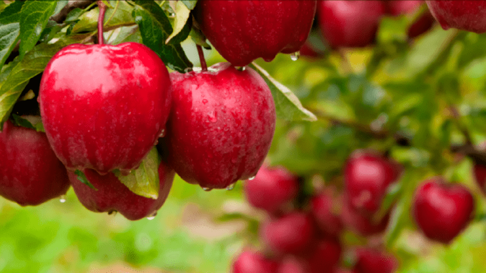

Este serviço foi pensado para produtores de maçãs que desejam verificar a qualidade de seus produtos. Basta clicar em "Nova Predição", preencher as características do fruto e nossa ferramenta fará a análise.
| Produtor | Safra | Tamanho | Peso | Doçura | Crocância | Suculência | Maturação | Acidez | Qualidade | Ações |
|---|